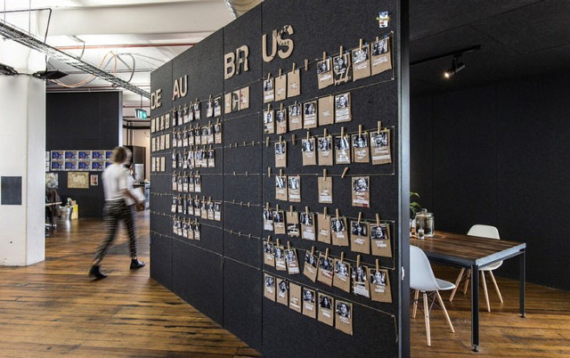
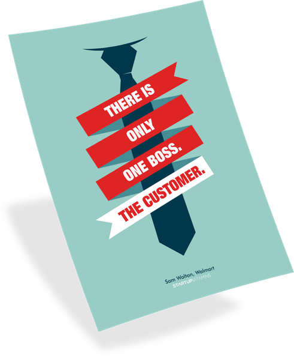

Ashley King ran the support team at 99designs for six years before moving into a more product focused role two months ago. Under her leadership, the team grew from just a couple of agents to more than 50, answering more than 30,000 inquiries per month.
99designs is now the world’s largest marketplace for graphic design projects. They raised $35M from Accel in 2011 and haven’t looked back since. Their platform is powering a new design every 1.5 seconds. In the last nine years, they’ve helped more than 450,000 customers with their design projects.

photo via 99designs careers page
Naturally, I wanted to know how Ashley built and scaled her team in such a fast-paced environment. How does excellent support enable a company to grow as quickly as 99designs? How do you prove this?
This Q&A covers questions relating to those two ideas while also answering the following:
- How do you build and manage a 50+ person team across multiple time zones, cultures, and language barriers?
- How do you keep a cross-cultural team engaged, focused, and doing the best work?
- How much time and investment does it take to create your own multi-channel support team?
- How do you track and manage your support work and relate this work back to your business goals and investment?
- When and how should a startup invest in dedicated agents, live chat, or phone support?
Before getting to the answers, a quick mention that if you like articles like this, you can also check out my interviews with support leaders at Vend, Biteable, and Sendle. We cover many of the same topics, and I’m already starting to see trends in how Ashley, Steve, Emily, and Eva all approach their work.
Now, let’s get to the questions!
The Interview
Hi Ashley, thanks for taking the time! First question - how big is (was) your team and how do you structure your team?
Thanks for having me! The team fluctuates around 50 people. It’s worldwide. Our head office is in Oakland, but we have support people in every office.
Our English agents and managers are spread across the world between the US, Australia, Philippines and Europe. Our Berlin office is where we support our localized European languages and we support Portuguese as well as Spanish out of Brazil.
How did you grow your team to that size?
In the early days, it was myself and one team lead. Then, over the years, we’ve built out a management structure. Each manager has no more than 9 direct reports.
As we grew, we realized that we needed a manager and/or team lead (sometimes both) to support each time zone. This provided us a case escalation person at all times.

Flyer design by DhoBee
How do you manage a team with two very different customer types — designers and people buying design work?
Our structure is split into two. We have teams that are focused on customer support and teams that are focused on designer support. Each group receives tickets based on where the support inquiry initiates.
For designer support, you need a bit of a different skill set. You need more of a design and art background.
For customer support, we have many creative people, but we also want to find people with customer relations backgrounds. They need to be time efficient and able to communicate effectively.
What’s your approach to hiring and training agents?
I am a strong believer that you can train nearly anyone to do anything; but you cannot train somebody to have a heart.
For everyone, we look for a sense of a passion and empathy so that they can relate to whomever they are communicating with — designer or customer — when the user is having a problem.
How do you motivate your support staff to do the best work?
It’s a bit unconventional, but I think the biggest motivation for most of us is receiving compliments from customers. It’s truly motivating to help someone in a difficult situation. Often, after a customer experiences a truly positive experience, they write to the business about how amazing their support experience was.
It’s also motivating to keep response times down while keeping customers happy.
When things are really tough, for example when we’re short on staff because a bunch of people are at home sick with the flu, we group the team together, and power through the queues as a group. We’re a community of people solving people’s problems — and it’s fun.

Illustration by LexLuchez
How do you train support staff when they are new to your team? What’s the process you take from start to finish?
Our training is broken up into a few sections. It usually takes about three weeks. I always tell new hires that it’s going to take three months to feel completely at home with what they’re doing.
First, we conduct a company overview. Then, they use our product, which usually means running a design contest. This helps with relating back to the customers later.
The rest of the training is fairly standard. They listen to phone calls or they watch others do emails live. We also break out our products into sections with learning sessions on each. From there each trainee does worksheets to help them develop their own Support “voice” to describe the product.
How are you able to provide support in multiple languages? Do you have support teams in each country or do you have people in-house who can speak multiple languages?
In 2012, as part of our acquisition of a German competitor, we gained a European support team that covered multiple languages.
We hire people in the Berlin office that typically speak more than one language. With small teams, you want someone that can easily help with multiple languages.
We train the team managers in both English as well as the language(s) in which they will support the platform.
How do you hire managers?
Everyone has been part of the team before they become a support manager. All of our support managers started as support agents. This ensures they are extremely knowledgeable on our product, customer and designer behavior.
If we hired managers from the outside, we estimate it would take them 3–6 months before they could start performing management functions.
How can a support agent transition into a management role?
It depends on the person. Some people have more of the prerequisite skills to be a manager. Not everyone wants to be a manager.
Some people are on more of an account executive path to work with more high-level clients.
If you want to be a manager, be open with your direct boss and tell them that you want to be a manager someday. As a manager, I’m just as invested in your growth as you are.
Also one piece of advice; management by fear is the absolute worst way to manage a customer service team. They are already working through fearful situations with potentially upset customers. Balance your management strategy with clear constructive feedback and praise. Ultimately if your team doesn’t feel like they can learn from their mistakes, you’re not going to see any growth.
Make sure you work well with others. Think about how you talk with others. Treat others — co workers and customers alike — how you want to be treated. If you can’t effectively do this consistently, then you may not be the right fit for management.
In terms of specific management skills, you need:
- Time organization
- Effective communication
- A positive outlook in tricky situations
Shirt design by Kazoe
What extra costs are involved with phone support compared to email or live chat?
Phone support costs about three times as much as chat or email support. This is for two reasons:
First, you can only handle one phone call at a time. With chat support, you can probably serve three customers at the same time.
Second, when it comes to phone support, you need to invest more in training. If you ring up a support person as a consumer, you want that person to not only be an expert, but also be able to have an emotionally intelligent conversation. An effective combination of these two things — expertise and emotional intelligence — takes time to develop, especially when an agent is still learning about the product.
The tech behind phone support is actually getting easier and cheaper with VoIP, but the headcount and training costs are the most significant.
When should a startup think about offering phone support?
If an agent is talking to a consumer via email and chat, and they start thinking to themselves, “It would be so much easier to talk to this person on the phone,” — that’s when you should probably consider phone support.
I don’t think every company should provide phone support, but it really depends on the product.
I think for a long time, companies thought phone support was dying and that people were moving onto text and chat support instead. That sentiment was incorrect because phone support can be one of the most effective ways to build customer loyalty.
logo by Suede
What can phone support provide that email or chat support can’t provide?
Phone support gives the customer an added sense of comfort.
Initially, people often expect a painful support experience. As a result, they dread it. However, this negative context gives you the opportunity to truly delight them. When you delight them, they are more likely to be customer evangelists.
For us, we provide a business where two humans are interacting. The customer and the designer come from very different backgrounds. Maybe the customer has never had a logo designed before, so it’s brand new territory for them. When it’s necessary, it’s important that we talk to them and make them feel comfortable about the whole process.
What’s your survey process?
We survey every customer to ensure we get well rounded results. They get an NPS survey and they can leave comments, which allow us to get a great understanding of both ends of the survey spectrum — the good and the bad. Then if we see complaints about how support was handled, then we take action.
How do you champion support?
Unprovoked, many consumers tell us about their support experience.
I tell agents, not to be shy about tooting their own horn. If someone says, “wow, you’ve been so helpful.” The agent is encouraged to have the customer alert their manager, and then the manager shares that with the global teams via slack or email.
Overall, 99designs does an excellent job of that. We really value what support does.
How can a startup get more of their customers to leave positive reviews on third party sites like Google Reviews or TrustPilot?
We ask them. If someone is on the phone with an agent and they say, “Wow, I couldn’t have done this without you,” we say, “You know what, it would be wonderful if you could leave a review on these sites, if you feel comfortable.” That works really well.
What was your #1 challenge as support director?
Trying to figure out how to effectively push users to help themselves through self-service and how to make them successful that way.
We want people to contact us because it helps them have a positive result. The second challenge is running a cohesive global team while being a remote manager to most of the team.
Finding that balance is the biggest challenge in the marketplace. How do we push people to help themselves without putting them off?
When should a startup hire their first full time customer support agent?
Day one. This is so important. It almost doesn’t matter what you’re selling or what your product is. If you have a customer, you should have someone working on customer support.
When you first launch something, there will always be problems — small or large. And as said before, it creates loyalty and comfort when someone is quickly available to help solve the customer’s problems.
I’d make the first hire someone with customer support experience who you can see growing into a management role.
Customer contact volumes will likely be low in the beginning, but don’t worry, there will be all kinds of activities to do. They should be proactively reaching out to customers. They should create a knowledge base. They should be actively using the product. They can take care of the self-service niche.
How do you build a business case for hiring more agents or investing in support management?
We built a business case around removing complaints.
We have both a qualitative and a quantitative approach. Anyone high up in the business wants to see the numbers. Market research is my default in those types of cases. “See what other leaders are doing in the space, companies like Airbnb or Zappos.” We backup our data with benchmarks.
For example, we had agents talking to too many customers at the same time. We found that reducing chats per agent resulted in improved quality and a decrease in complaints.
How fast should an eCommerce or SaaS business respond to their support tickets?
Good question. I don’t have the golden answer. It depends on the industry and what type of product or software you’re selling. Look at what your competitors are doing. Try to match it or be better.
In this day and age, consumers are used to either getting instant support or having long wait times. So any ways you can go above and beyond to delight them, you can create support success or build loyalty with your business.
With higher value customers, you’re going to want to answer them faster.
I did some analysis looking at support response times for a number of established SaaS companies and found that most companies take a couple of hours to respond to a customer during the week and closer to 7 hours on the weekends. Does that sound about right?
Yup.
Setting expectations is really good, too. If you see that someone is hitting a pivotal point over the weekend, we should proactively prepare them. “Just so you’re aware, you can reach out on the weekend, but if you wait until Monday, I can call you when I get into the office.”
We want to give agents ownership to do things like this.
Flyer by MattDyckStudios
What’s your favorite metric for measuring the effectiveness of your team?
Customer satisfaction, through NPS [Net Promoter Score].
We track customer satisfaction and NPS with every purchase. We look for trends in those scores, and we strive to raise the quality of our work where those scores are below acceptable levels.
What’s your experience hiring agents in remote locations?
We do all of our own hiring and training. We want full quality control and sustainability.
It’s pretty known in the support industry that when hiring in the Philippines, the market is so competitive that if they get slightly more money from the BPO [Business Process Outsourcer] across the street, they’ll go to that BPO.
Similarly, if you hire someone that’s floated around the call center industry, be prepared that you’re going to potentially have to spend longer training them — especially if you want to craft their voice 100% for your product/business.
I find you’ll need to spend about 6 weeks wiping some of their previous training away to help craft their custom tone of voice, personality etc., for your customers and brand.
Another challenge , as with any open office situation, if one person gets sick, everyone could get sick. If you have agents who work from home, it lessens the likelihood of repeated sick days.
Thanks for taking the time!
Thanks for having me! This was fun!
For more support Q&As, check out interviews with support leaders at Vend, Biteable, and Sendle . I’ll also be sharing future research with an upcoming newsletter. To learn more about Influx, check out how it works or follow our blog.
For more information about 99designs, check out their services for logos, t shirts and brand identities.